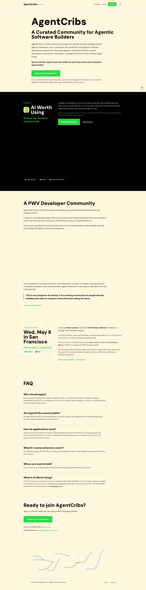
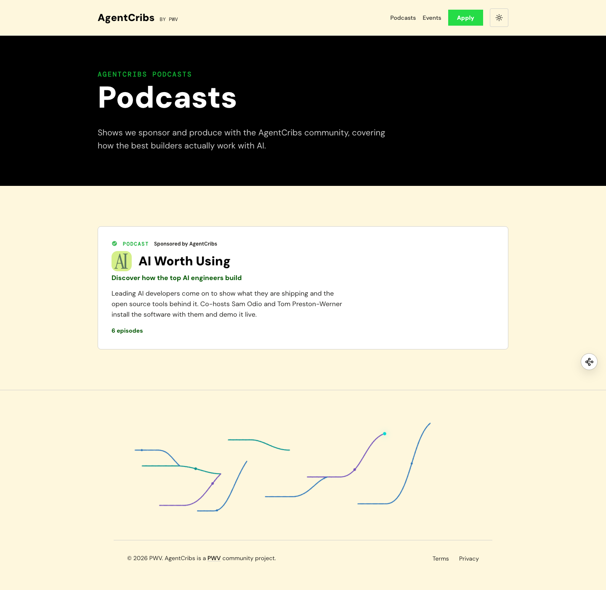
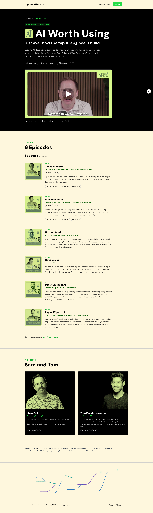

◉ Screenshot review
Fresh full-page screenshots of the home page, podcasts index, and the AI Worth Using detail page — captured at 1440×900 against the local dev server, with time left for the Cloudflare Stream trailer to load its poster and player chrome.


